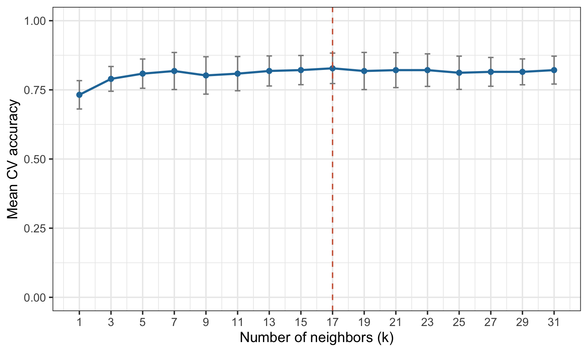

In the previous demonstration, we implemented KNN with separate training, validation, and test sets. We then extended this approach to cross-validation. Here, we repeat the KNN workflow using tidymodels, a collection of R packages designed to make machine learning workflows more consistent and reproducible.
In tidymodels, we define different parts of the analysis separately:
A recipe describes how to prepare the data, including steps such as normalization or handling missing values.
A model specification defines the algorithm and any hyperparameters we want to tune.
A workflow combines the recipe and model, so the same preprocessing is applied whenever the model is fitted or used for prediction.
Resampling and tuning allow us to compare hyperparameter values using cross-validation.
We will predict whether BMI > 30 using waist and hdl, select the number of neighbors ((k)) using stratified five-fold cross-validation, and evaluate performance using accuracy. As before, we hold out 20% of the data for a final test, and use the remaining 80% for model development.
The key advantage of a workflow is that preprocessing is performed within each training fold. This means that the means and standard deviations used to normalize predictors are estimated without looking at the corresponding validation fold, helping prevent data leakage.
# A tibble: 2 × 2
`BMI>30` n
<fct> <int>
1 0 242
2 1 152
Split the data and create CV folds
We keep the test set untouched while selecting (k). The five folds are created only from the development data. Stratification helps preserve the outcome class proportions across splits.
KNN relies on distances, so predictors measured on different scales should be standardized. step_normalize() specifies this operation; it does not calculate means and standard deviations yet. Those values are learned when the recipe is fitted, separately for each CV training fold.
Code
knn_recipe <-recipe(`BMI>30`~ waist + hdl, data = data_other) %>%step_normalize(all_numeric_predictors())knn_recipe
Specify KNN and build a workflow
Here, tune() tells tidymodels that we want to choose the number of neighbors using cross-validation. We keep uniform neighbor voting (weight_func = "rectangular") to match the manual KNN demonstration. The workflow then bundles the model and recipe together.
We evaluate odd values of (k) from 1 to 31 using the same five folds for each candidate. tune_grid() fits the workflow on the training portion of each fold and evaluates it on the corresponding validation portion. Each candidate must be smaller than the smallest training-fold size.
collect_metrics() summarizes accuracy across folds for each value of (k). Its mean column gives average CV accuracy, while std_err is the standard error of that average. For the plot, we calculate the standard deviation across folds as std_err * sqrt(n), where n is the number of non-missing fold estimates. These error bars illustrate variation between folds; they are not confidence intervals for future performance.
best_k <-select_best(knn_results, metric ="accuracy")ggplot(cv_results, aes(x = neighbors, y = mean)) +geom_errorbar(aes(ymin =pmax(0, mean - sd),ymax =pmin(1, mean + sd)),width =0.35, color ="grey55") +geom_line(color ="#2578A8", linewidth =1) +geom_point(color ="#2578A8", size =2) +geom_vline(xintercept = best_k$neighbors, linetype ="dashed",color ="#CE6547") +scale_x_continuous(breaks = k_values) +coord_cartesian(ylim =c(0, 1)) +labs(x ="Number of neighbors (k)", y ="Mean CV accuracy") +theme_bw(base_size =14)

Figure 1: Mean five-fold cross-validation accuracy for different values of k; error bars show ±1 SD across folds.
Select k and evaluate on the test set
select_best() chooses the value of (k) with the highest mean CV accuracy. finalize_workflow() inserts that value into our model specification. Finally, last_fit() refits the complete workflow (including normalization) using all development data (80%) and evaluates it once on the held-out test set (20%).
One advantage of tidymodels is that we can reuse the same recipe and cross-validation folds with a different algorithm. For example, to fit a linear support vector machine (SVM), we change the model specification and replace it in the workflow. Here we use a fixed cost value (cost = 1) for illustration, rather than tuning it.
# A tibble: 1 × 6
.metric .estimator mean n std_err .config
<chr> <chr> <dbl> <int> <dbl> <chr>
1 accuracy binary 0.821 5 0.0230 pre0_mod0_post0
The data split, normalization, folds, and accuracy metric stay the same. Only the model changes. We use fit_resamples() here because we are evaluating one fixed SVM configuration; if we wanted to choose its cost using CV, we could use tune() and tune_grid() as we did for KNN. These CV results are for demonstration, not a final test-set evaluation.
Take-home message
The modeling logic is the same as in our manual KNN demonstration: split the data → use CV to tune (k) → refit on all development data → evaluate on the test set. tidymodels makes these steps easier to organize and helps ensure that preprocessing is learned from training data only.
Comparison with the manual demo: The two approaches may produce slightly different results because rsample and splitTools use different splitting procedures. Using the same random seed does not guarantee identical observations in each split. For a strict numerical comparison, reuse exactly the same row indices, candidate values of (k), and preprocessing steps.